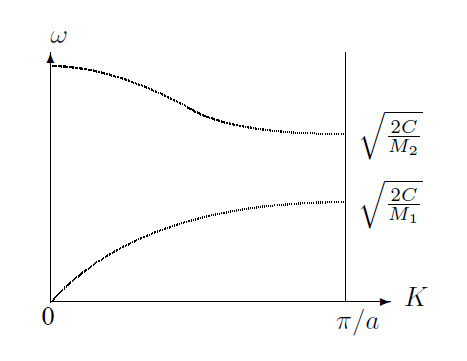
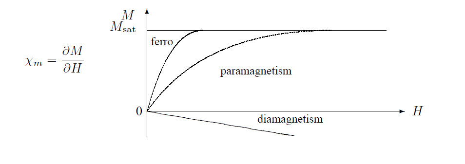
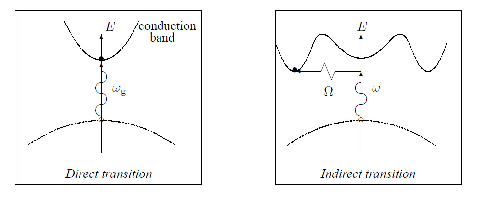
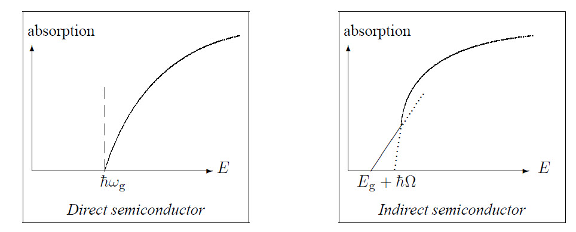
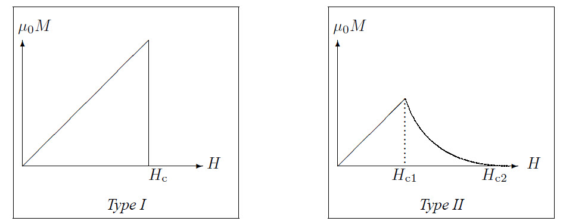

A lattice is defined by the 3 translation vectors \(\vec{a}_i\), so that the atomic composition looks the same from each point \(\vec{r}\) and \(\vec{r}'=\vec{r}+\vec{T}\), where \(\vec{T}\) is a translation vector given by: \(\vec{T}=u_1\vec{a}_1+u_2\vec{a}_2+u_3\vec{a}_3\) with \(u_i\in \hspace{-1mm}IN\). A lattice can be constructed from primitive cells. As a primitive cell one can take a parallpiped, with volume
\[V_{\rm cell}=|\vec{a}_1\cdot(\vec{a}_2\times\vec{a}_3)|\]
Because a lattice has a periodical structure the physical properties which are connected with the lattice have the same periodicity (neglecting boundary effects):
\[n_{\rm e}(\vec{r}+\vec{T}\,)=n_{\rm e}(\vec{r}\,)\] T
his periodicity is suitable to use Fourier analysis: \(n(\vec{r}\,)\) is expanded as:
\[n(\vec{r}\,)=\sum\limits_G n_G\exp(i\vec{G}\cdot\vec{r}\,)\]
with
\[n_G=\frac{1}{V_{\rm cell}}\int\hspace{-2mm}\int\limits_{\rm cell}\hspace{-2mm} \int n(\vec{r}\,)\exp(-i\vec{G}\cdot\vec{r}\,)dV\]
\(\vec{G}\) is the reciprocal lattice vector. If \(\vec{G}\) is written as \(\vec{G}=v_1\vec{b}_1+v_2\vec{b}_2+v_3 \vec{b}_3\) with \(v_i \in I\hspace{-1mm}N\), it follows for the vectors \(\vec{b}_i\), cyclically:
\[\vec{b}_i=2\pi\frac{\vec{a}_{i+1}\times\vec{a}_{i+2}} {\vec{a}_i\cdot(\vec{a}_{i+1}\times\vec{a}_{i+2})}\]
The set of \(\vec{G}\)-vectors determines the Röntgen diffractions: a maximum in the reflected radiation occurs if: \(\Delta\vec{k}=\vec{G}\) with \(\Delta\vec{k}=\vec{k}-\vec{k}'\). So: \(2\vec{k}\cdot\vec{G}=G^2\). From this follows for parallel lattice planes (Bragg reflection) that for the maxima: \(2d\sin(\theta)=n\lambda\) holds.
The Brillouin zone is defined as a Wigner-Seitz cell in the reciprocal lattice.
A distinction can be made between 4 binding types:
For the ion binding of NaCl the energy per molecule is calculated by:
E = cohesive energy(NaCl) – ionization energy(Na) + electron affinity(Cl)
The interaction in a covalent bond depends on the relative spin orientations of the electrons constituing the bond. The potential energy for two parallel spins is higher than the potential energy for two antiparallel spins. Furthermore the potential energy for two parallel spins has sometimes no minimum. In that case binding is not possible.
In this model for crystal vibrations only nearest-neighbour interactions are taken into account. The force on atom \(s\) with mass \(M\) can then be written as:
\[F_s=M\frac{d^2u_s}{dt^2}=C(u_{s+1}-u_s)+C(u_{s-1}-u_s)\]
Assuming that all solutions have the same time-dependence \(\exp(-i\omega t)\) this results in:
\[-M\omega^2 u_s=C(u_{s+1}+u_{s-1}-2u_s)\]
Further it is postulated that: \(u_{s\pm1}=u\exp(isKa)\exp(\pm iKa)\).
This gives: \(u_s=\exp(iKsa)\). Substituting the later two equations in the fist results in a system of linear equations, which has only a solution if their determinant is 0. This gives:
\[\omega^2=\frac{4C}{M}\sin^2(\mbox{\small$\frac{1}{2}$}Ka)\]
Only vibrations with a wavelength within the first Brillouin Zone have a physical significance. This requires that \(-\pi<Ka\leq\pi\).
The group velocity of these vibrations is given by:
\[v_{\rm g}=\frac{d\omega}{dK}=\sqrt{\frac{Ca^2}{M}}\cos(\mbox{\small$\frac{1}{2}$}Ka)~.\]
and is 0 on the edge of a Brillouin Zone. Here, there is a standing wave.
Now the solutions are:
\[\omega^2=C\left(\frac{1}{M_1}+\frac{1}{M_2}\right)\pm C\sqrt{\left(\frac{1}{M_1}+\frac{1}{M_2}\right)^2-\frac{4\sin^2 (Ka)}{M_1 M_2}}\]

Connected with each value of \(K\) are two values of \(\omega\), as can be seen in the graph. The upper line describes the optical branch, the lower line the acoustical branch. In the optical branch, both types of ions oscillate in opposite phases, in the acoustical branch they oscillate in the same phase. This results in a much larger induced dipole moment for optical oscillations, and also a stronger emission and absorption of radiation. Furthermore each branch has 3 polarization directions, one longitudinal and two transverse.
The quantum mechanical excitation of a crystal vibration with an energy \(\hbar\omega\) is called a phonon. Phonons can be viewed as quasi-particles: with collisions, they behave as particles with momentum \(\hbar K\). Their total momentum is 0. When they collide, their momentum need not be conserved: for a normal process and: \(K_1+K_2=K_3\), while for an umklapp process: \(K_1+K_2=K_3+G\). Because phonons have no spin they behave like bosons.
The total energy of the crystal vibrations can be calculated by multiplying each mode with its energy and sum over all branches \(K\) and polarizations \(P\):
\[U=\sum\limits_{K}\sum\limits_{P}\hbar\omega\left\langle n_{k,p} \right\rangle= \sum\limits_{\lambda}\int D_{\lambda}(\omega)\frac{\hbar\omega}{\exp(\hbar\omega/kT)-1}d\omega\]
for a given polarization \(\lambda\). The thermal heat capacity is then:
\[C_{\rm lattice}=\frac{\partial U}{\partial T}=k\sum\limits_{\lambda}\int D(\omega) \frac{(\hbar\omega/kT)^2\exp(\hbar\omega/kT)}{(\exp(\hbar\omega/kT)-1)^2} d\omega\]
The dispersion relation in one dimension is given by:
\[D(\omega)d\omega =\frac{L}{\pi}\frac{dK}{d\omega}d\omega=\frac{L}{\pi}\frac{d\omega}{v_{\rm g}}\]
In three dimensions one applies periodic boundary conditions to a cube with \(N^3\) primitive cells and a volume \(L^3\): \(\exp(i(K_x x+K_y y +K_z z))\equiv\exp(i(K_x(x+L)+K_y(y+L)+K_z(z+L)))\).
Because \(\exp(2\pi i)=1\) this is only possible if:
\[K_x,K_y,K_z = 0;~\pm\frac{2\pi}{L};~\pm\frac{4\pi}{L};~\pm\frac{6\pi}{L};~...\pm\frac{2N\pi}{L}\]
So there is only one allowed value of \(\vec{K}\) per volume \((2\pi/L)^3\) in \(K\)-space, or:
\[\left(\frac{L}{2\pi}\right)^3 =\frac{V}{8\pi^3}\]
allowed \(\vec{K}\)-values per unit volume in \(\vec{K}\)-space, for each polarization and each branch. The total number of states with a wave vector \(<K\) is:
\[N=\left(\frac{L}{2\pi}\right)^3\frac{4\pi K^3}{3}\]
for each polarization. The density of states for each polarization is, according to the Einstein model:
\[D(\omega)=\frac{dN}{d\omega}=\left(\frac{VK^2}{2\pi^2}\right) \frac{dK}{d\omega}=\frac{V}{8\pi^3}\int\hspace{-2mm}\int\frac{dA_{\omega}}{v_{\rm g}}\]
The Debye model for thermal heat capacities is a low-temperature approximation which is valid up to \(\approx50\)K. Here, only the acoustic phonons are taken into account (3 polarizations), and one assumes that \(v=\omega K\), independent of the polarization. From this follows: \(D(\omega)=V\omega^2/2\pi^2v^3\), where \(v\) is the speed of sound. This gives:
\[U=3\int D(\omega)\left\langle n \right\rangle\hbar\omega d\omega= \int\limits_0^{\omega_D}\frac{V\omega^2}{2\pi^2v^3}\frac{\hbar\omega}{\exp(\hbar\omega/kT)-1}d\omega= \frac{3Vk^2T^4}{2\pi^2v^3\hbar^3}\int\limits_0^{x_{\rm D}}\frac{x^3dx}{{\rm e}^x-1}~.\]
Here, \(x_{\rm D}=\hbar\omega_{\rm D}/kT=\theta_{\rm D}/T\). \(\theta_{\rm D}\) is the Debye temperature and is defined by:
\[\theta_{\rm D}=\frac{\hbar v}{k}\left(\frac{6\pi^2N}{V}\right)^{1/3}\]
where \(N\) is the number of primitive cells. Because \(x_{\rm D}\rightarrow\infty\) for \(T\rightarrow0\) it follows from this:
\[ U=9NkT\left(\frac{T}{\theta_{\rm D}}\right)^3\int\limits_0^{\infty}\frac{x^3dx}{{\rm e}^x-1}= \frac{3\pi^4NkT^4}{5\theta_{\rm D}}\sim T^4 \;\;\;\mbox{and}\;\;\; C_V=\frac{12\pi^4NkT^3}{5\theta_{\rm D}^3}\sim T^3 \]
In the Einstein model for the thermal heat capacity one considers only phonons at one frequency, an approximation for optical phonons.
The following graph shows the magnetization versus field strength for different types of magnetism:

The quantum mechanical origin of diamagnetism is the Larmor precession of the spin of the electron. Starting with a circular electron orbit in an atom with two electrons, there is a Coulomb force \(F_{\rm c}\) and a magnetic force on each electron. If the magnetic part of the force is not strong enough to significantly deform the orbit then it holds that:
\[\omega^2=\frac{F_{\rm c}(r)}{mr}\pm\frac{eB}{m}\omega= \omega_0^2\pm\frac{eB}{m}(\omega_0+\delta)\Rightarrow\omega =\sqrt{\left(\omega_0\pm\frac{eB}{2m}\right)^2+\cdots}\approx \omega_0\pm\frac{eB}{2m}=\omega_0\pm\omega_{\rm L}\]
Here, \(\omega_{\rm L}\) is the Larmor frequency. One electron is accelerated, the other decelerated. Hence there is a net circular current which results in a magnetic moment \(\vec{\mu}\). The circular current is given by \(I=-Ze\omega_{\rm L}/2\pi\), and \(\left\langle \mu \right\rangle=IA=I\pi\left\langle \rho^2 \right\rangle=I\pi\left\langle r^2 \right\rangle\). If \(N\) is the number of atoms in the crystal it follows for the susceptibility, with \(\vec{M}=\vec{\mu}N\):
\[\chi=\frac{\mu_0 M}{B}=-\frac{\mu_0NZe^2}{6m}\left\langle r^2 \right\rangle\]
Starting with the splitting of energy levels in a weak magnetic field: \(\Delta U_m-\vec{\mu}\cdot\vec{B}=m_Jg\mu_{\rm B}B\), and with a distribution \(f_m\sim\exp(-\Delta U_m /kT)\), one finds for the average magnetic moment \(\langle\mu\rangle=\sum f_m\mu/\sum f_m\). After linearization and because \(\sum m_J=0\), \(\sum J=2J+1\) and \(\sum m_J^2=\frac{2}{3}J(J+1)(J+\frac{1}{2})\) it follows that:
\[\chi_p=\frac{\mu_0M}{B}=\frac{\mu_0 N\left\langle \mu \right\rangle}{B}= \frac{\mu_0J(J+1)g^2\mu_{\rm B}^2N}{3kT}\]
This is the Curie law, \(\chi_p\sim1/T\).
A ferromagnet behaves like a paramagnet above a critical temperature \(T_{\rm c}\). To describe ferromagnetism a field \(B_E\) parallel with \(M\) is postulated: \(\vec{B}_E=\lambda\mu_0\vec{M}\). From there the treatment is analogous to the paramagnetic case:
\[\mu_0 M=\chi_p(B_{\rm a}+B_E)=\chi_p(B_{\rm a}+\lambda\mu_0 M)= \mu_0\left(1-\lambda\frac{C}{T}\right)M\]
From this follows for a ferromagnet: \(\displaystyle\chi_F=\frac{\mu_0 M}{B_{\rm a}}=\frac{C}{T-T_{\rm c}}\) which is Weiss-Curie’s law.
If \(B_E\) is estimated this way it results in values of about 1000 T. This is clearly unrealistic and suggests another mechanism. A quantum mechanical approach from Heisenberg postulates an interaction between two neighbouring atoms: \(U=-2J\vec{S}_i\cdot\vec{S}_j\equiv-\vec{\mu}\cdot\vec{B}_E\). \(J\) is an overlap integral given by: \(J=3kT_{\rm c}/2zS(S+1)\), with \(z\) the number of neighbours. A distinction between 2 cases can now be made:
Heisenberg’s theory predicts quantized spin waves: magnons. Starting from a model with only nearest neighbouring atoms interacting one can write:
\[U=-2J\vec{S}_p\cdot(\vec{S}_{p-1}+\vec{S}_{p+1})\approx \vec{\mu}_p\cdot\vec{B}_p~~~\mbox{with}~~~ \vec{B}_p=\frac{-2J}{g\mu_{\rm B}}(\vec{S}_{p-1}+\vec{S}_{p+1})\]
The equation of motion for the magnons becomes: \(\displaystyle\frac{d\vec{S}}{dt}=\frac{2J}{\hbar}\vec{S}_p\times(\vec{S}_{p-1}+\vec{S}_{p+1})\)
From here the treatment is analogous to phonons: postulate traveling waves of the type \(\vec{S}_p=\vec{u}\exp(i(pka-\omega t))\). This results in a system of linear equations with solution:
\[\hbar\omega=4JS(1-\cos(ka))\]
The solution with period \(L\) of the one-dimensional Schrödinger equation is: \(\psi_n(x)=A\sin(2\pi x/\lambda n)\) with \(n\lambda_n=2L\). From this follows
\[E=\frac{\hbar^2}{2m}\left(\frac{n\pi}{L}\right)^2\]
In a linear lattice the only important quantum numbers are \(n\) and \(m_s\). The Fermi level is the uppermost filled level in the ground state, which has the Fermi-energy \(E_{\rm F}\). If \(n_{\rm F}\) is the quantum number of the Fermi level, it can be expressed as: \(2n_{\rm F}=N\) so \(E_{\rm F}=\hbar^2\pi^2 N^2/8mL\). In 3 dimensions:
\[k_{\rm F}=\left(\frac{3\pi^2N}{V}\right)^{1/3}~~\mbox{and}~~ E_{\rm F}=\frac{\hbar^2}{2m}\left(\frac{3\pi^2N}{V}\right)^{2/3}\]
The number of states with energy \(\leq E\) is then: \(\displaystyle N=\frac{V}{3\pi^2}\left(\frac{2mE}{\hbar^2}\right)^{3/2}\) and the density of states becomes: \(\displaystyle D(E)=\frac{dN}{dE}=\frac{V}{2\pi^2}\left(\frac{2m}{\hbar^2}\right)^{3/2} \sqrt{E}=\frac{3N}{2E}\).
The heat capacity of the electrons is approximately 0.01 times the classical expected value \(\frac{3}{2}Nk\). This is a result of the Pauli exclusion principle and the Fermi-Dirac distribution: only electrons within an energy range \(\sim kT\) of the Fermi level are excited thermally. This fraction is \(\approx T/T_{\rm F}\). The internal energy then becomes:
\[U\approx NkT\frac{T}{T_{\rm F}}~~\mbox{and}~~C=\frac{\partial U}{\partial T}\approx Nk\frac{T}{T_{\rm F}}\]
A more accurate analysis gives: \(C_{\rm electrons}=\frac{1}{2}\pi^2NkT/T_{\rm F}\sim T\). Together with the \(T^3\) dependence of the thermal heat capacity of the phonons the total thermal heat capacity of metals is described by: \(C=\gamma T+AT^3\).
The equation of motion for the charge carriers is: \(\vec{F}=md\vec{v}/dt=\hbar d\vec{k}/dt\). The variation of \(\vec{k}\) is given by \(\delta\vec{k}=\vec{k}(t)-\vec{k}(0)=-e\vec{E}t/\hbar\). If \(\tau\) is the characteristic collision time of the electrons, \(\delta\vec{k}\) remains stable if \(t=\tau\). Then: \(\left\langle \vec{v}\, \right\rangle=\mu\vec{E}\) holds, with \(\mu=e\tau/m\) the electron mobility.
The current in a conductor is given by: \(\vec{J}=nq\vec{v}=\sigma\vec{E}=\vec{E}/\rho=ne\mu\vec{E}\). Because for the collision time: \(1/\tau=1/\tau_L+1/\tau_i\), where \(\tau_L\) is the collision time with the lattice phonons and \(\tau_i\) the collision time with the impurities it follows for the resistivity that \(\rho=\rho_L+\rho_i\), with \(\lim\limits_{T\rightarrow 0}\rho_L=0\).
If a magnetic field is applied \(\perp\) to the direction of the current the charge carriers will be pushed aside by the Lorentz force. This results in a magnetic field \(\perp\) to the flow direction of the current. If \(\vec{J}=J\vec{e}_x\) and \(\vec{B}=B\vec{e}_z\) than \(E_y/E_x=\mu B\). The Hall coefficient is defined by: \(R_{\rm H}=E_y/J_x B\), and \(R_{\rm H}=-1/ne\) if \(J_x=ne\mu E_x\). The Hall voltage is given by: \(V_{\rm H}=Bvb=IB/neh\) where \(b\) is the width of the material and \(h\) de height.
With \(\ell =v_F\tau\) the mean free path of the electrons follows from \(\kappa=\frac{1}{3}C\left\langle v \right\rangle\ell\): \(\kappa_{\rm electrons}=\pi^2nk^2T\tau/3m\). From this comes the Wiedemann-Franz ratio: \(\kappa/\sigma=\frac{1}{3}(\pi k/e)^2T\).
In the tight-bond approximation it is assumed that \(\psi={\rm e}^{ikna}\phi(x-na)\). From this it follows for the energy: \(\left\langle E \right\rangle=\left\langle \psi|H|\psi \right\rangle=E_{\rm at}-\alpha-2\beta\cos(ka)\). So this gives a cosine superimposed on the atomic energy, which can often be approximated by a harmonic oscillator. If it is assumed that the electron is nearly free one can postulate: \(\psi=\exp(i\vec{k}\cdot\vec{r}\,)\). This is a traveling wave. This wave can be decomposed into two standing waves:
\[\begin{aligned} \psi(+)&=&\exp(i\pi x/a)+\exp(-i\pi x/a)=2\cos(\pi x/a)\\ \psi(-)&=&\exp(i\pi x/a)-\exp(-i\pi x/a)=2i\sin(\pi x/a)\end{aligned}\]
The probability density \(|\psi(+)|^2\) is high near the atoms of the lattice and low in between. Conversely the probability density \(|\psi(-)|^2\) is low near the atoms of the lattice and high in between. Hence the energy of \(\psi(+)\) is also lower than the energy of \(\psi)(-)\). Suppose that \(U(x)=U\cos(2\pi x/a)\), than the bandgap is given by:
\[E_{\rm gap}=\int\limits_0^1 U(x)\left[ |\psi(+)|^2-|\psi(-)|^2\right] dx=U\]
The band structures and the transitions between them of direct and indirect semiconductors are shown in the figures below. Here it is assumed that the momentum of the absorbed photon can be neglected. For an indirect semiconductor a transition from the valence- to the conduction band is also possible if the energy of the absorbed photon is smaller than the band gap: then, also a phonon is absorbed.

This difference can also be observed in the absorption spectra:

So indirect semiconductors, like Si and Ge, cannot emit any light and are therefore not usable to fabricate lasers. When light is absorbed: \(\vec{k}_{\rm h}=-\vec{k}_{\rm e}\), \(E_{\rm h}(\vec{k}_{\rm h})=-E_{\rm e}(\vec{k}_{\rm e})\), \(\vec{v}_{\rm h}=\vec{v}_{\rm e}\) and \(m_{\rm h}=-m_{\rm e}^*\) if the conduction band and the valence band have the same structure.
Instead of the normal electron mass one has to use the effective mass within a lattice. It is defined by:
\[m^*=\frac{F}{a}=\frac{dp/dt}{dv_{\rm g}/dt}=\hbar\frac{dK}{dv_{\rm g}}= \hbar^2\left(\frac{d^2E}{dk^2}\right)^{-1}\]
with \(E=\hbar\omega\) and \(v_{\rm g}=d\omega/dk\) and \(p=\hbar k\).
With the distribution function \(f_{\rm e}(E)\approx\exp((\mu-E)/kT)\) for the electrons and \(f_{\rm h}(E)=1-f_{\rm e}(E)\) for the holes the density of states is given by:
\[D(E)=\frac{1}{2\pi^2}\left(\frac{2m^*}{\hbar^2}\right)^{3/2}\sqrt{E-E_c}\]
with \(E_c\) the energy at the edge of the conductance band. From this it follows for the concentrations of the holes \(p\) and the electrons \(n\):
\[n=\int\limits_{E_c}^{\infty}D_{\rm e}(E)f_{\rm e}(E)dE=2\left(\frac{m^*kT}{2\pi\hbar^2} \right)^{3/2}\exp\left(\frac{\mu-E_c}{kT}\right)\]
For the product \(np\) follows: \(\displaystyle np=4\left(\frac{kT}{2\pi\hbar^2}\right)^3 \sqrt{m^*_{\rm e}m_{\rm h}}\exp\left(-\frac{E_{\rm g}}{kT}\right)\)
For an intrinsic (no impurities) semiconductor: \(n_{\rm i}=p_{\rm i}\), for a \(n-type\): \(n>p\) and in a \(p-type\) \(n<p\).
An exciton is a bound electron-hole pair, rotating on each other as in positronium. The excitation energy of an exciton is smaller than the bandgap because the energy of an exciton is lower than the energy of a free electron and a free hole. This causes a peak in the absorption just under \(E_{\rm g}\).
A superconductor is characterized by a zero resistivity if certain quantities are smaller than some critical values: \(T<T_{\rm c}\), \(I<I_{\rm c}\) and \(H<H_{\rm c}\). The BCS-model predicts for the transition temperature \(T_{\rm c}\):
\[T_{\rm c}=1.14\Theta_{\rm D}\exp\left(\frac{-1}{UD(E_{\rm F})}\right)\]
while experiments find for \(H_{\rm c}\) approximately:
\[H_{\rm c}(T)\approx H_{\rm c}(T_{\rm c})\left( 1-\frac{T^2}{T_{\rm c}^2}\right)~.\]
Within a superconductor the magnetic field is 0: the Meissner effect.
There are type I and type II superconductors. Because the Meissner effect implies that a superconductor is a perfect diamagnet in the superconducting state: \(\vec{H}=\mu_0\vec{M}\). This holds for a type I superconductor, for a type II superconductor this only holds to a certain value \(H_{\rm c1}\), for higher values of \(H\) the superconductor is in a vortex state to a value \(H_{\rm c2}\), which can be 100 times \(H_{\rm c1}\). If \(H\) becomes larger than \(H_{\rm c2}\) the superconductor becomes a normal conductor. This is shown in the figures below.

The transition to a superconducting state is a second order thermodynamic state transition. This means that there is a twist in the \(T-S\) diagram and a discontinuity in the \(C_X-T\) diagram.
For the Josephson effect one considers two superconductors, separated by an insulator. The electron wavefunction in one superconductor is \(\psi_1\), in the other \(\psi_2\). The Schrödinger equations in both superconductors are set equal:
\[i\hbar\frac{\partial \psi_1}{\partial t}=\hbar T\psi_2~~,~~i\hbar\frac{\partial \psi_2}{\partial t}=\hbar T\psi_1\]
\(\hbar T\) is the effect of the coupling of the electrons, or the transfer interaction through the insulator. The electron wavefunctions are written as \(\psi_1=\sqrt{n_1}\exp(i\theta_1)\) and \(\psi_2=\sqrt{n_2}\exp(i\theta_2)\). Because a Cooper pair comprises two electrons: \(\psi\sim\sqrt{n}\). From this follows, if \(n_1\approx n_2\):
\[\frac{\partial \theta_1}{\partial t}=\frac{\partial \theta_2}{\partial t}~~\mbox{and}~~\frac{\partial n_2}{\partial t}=-\frac{\partial n_1}{\partial t}\]
The Josephson effect results in a current density through the insulator depending on the phase difference as: \(J=J_0\sin(\theta_2-\theta_1)=J_0\sin(\delta)\), where \(J_0\sim T\). With an AC-voltage across the junction the Schrödinger equations become:
\[i\hbar\frac{\partial \psi_1}{\partial t}=\hbar T\psi_2-eV\psi_1~~\mbox{and}~~ i\hbar\frac{\partial \psi_2}{\partial t}=\hbar T\psi_1+eV\psi_2\]
This gives: \(\displaystyle J=J_0\sin\left(\theta_2-\theta_1-\frac{2eVt}{\hbar}\right)\).
Hence there is an oscillation with \(\omega=2eV/\hbar\).
For the current density in general it holds that: \(\displaystyle\vec{J}=q\psi^*\vec{v}\psi=\frac{nq}{m}[\hbar\vec{\nabla}\theta-q\vec{A}\,]\)
From the Meissner effect, \(\vec{B}=0\) and \(\vec{J}=0\), follows: \(\hbar\vec{\nabla}\theta=q\vec{A} \Rightarrow\oint\vec{\nabla}\theta dl=\theta_2-\theta_1=2\pi s\) with \(s\in I\hspace{-1mm}N\). Because: \(\oint\vec{A}dl=\int\hspace{-1.5mm}\int(\mbox{rot}\vec{A},\vec{n}\,)d\sigma= \int\hspace{-1.5mm}\int(\vec{B},\vec{n}\,)d\sigma=\Psi\) and \(\Psi=2\pi\hbar s/q\). The size of a flux quantum follows by setting \(s=1\): \(\Psi=2\pi\hbar/e=2.0678\cdot10^{-15}\) Tm\(^2\) follows.
From \(\theta_2-\theta_1=2e\Psi/\hbar\) for two parallel junctions it follows that: \(\displaystyle\delta_b-\delta_{\rm a}=\frac{2e\Psi}{\hbar}\), so
\(\displaystyle J=J_{\rm a}+J_{\rm b}=2J_0\sin\left(\delta_0\cos\left(\frac{e\Psi}{\hbar}\right)\right)\) This gives maxima if \(e\Psi/\hbar=s\pi\).
A current density in a superconductor proportional to the vector potential \(\vec{A}\) is postulated to be:
\[\vec{J}=\frac{-\vec{A}}{\mu_0\lambda_L^2}~~~\mbox{or}~~~ {\rm rot}\vec{J}=\frac{-\vec{B}}{\mu_0\lambda_L^2}\]
where \(\lambda_L=\sqrt{\varepsilon_0mc^2/nq^2}\). From this follows: \(\nabla^2\vec{B}=\vec{B}/\lambda_L^2\).
The Meissner effect is the solution of this equation: \(\vec{B}(x)=B_0\exp(-x/\lambda_L)\). Magnetic fields within a superconductor drop exponentially.
The BCS model can explain superconductivity in metals. (So far there is no explanation for high-\(T_{\rm c}\) superconductance).
A new ground state where the electrons behave like independent fermions is postulated. Because of the interaction with the lattice these pseudo-particles exhibit a mutual attraction. This causes two electrons with opposite spin to combine to a Cooper pair. It can be proved that this ground state is perfectly diamagnetic.
The infinite conductivity is more difficult to explain because a ring with a persisting current is not a real equilibrium: a state with zero current has a lower energy. Flux quantization prevents transitions between these states. Flux quantization is related to the existence of a coherent many-particle wavefunction. A flux quantum is the equivalent of about \(10^4\) electrons. So if the flux has to change with one flux quantum therea transition of many electrons has to occur, which is very improbable, or the system must go through intermediary states where the flux is not quantized so they have a higher energy. This is also very improbable.
Some useful mathematical relations are:
\[\int\limits_0^\infty\frac{xdx}{{\rm e}^{ax}+1}=\frac{\pi^2}{12a^2}~~,~~ \int\limits_{-\infty}^\infty\frac{x^2dx}{({\rm e}^x+1)^2}=\frac{\pi^2}{3}~~,~~ \int\limits_0^\infty\frac{x^3dx}{{\rm e}^x+1}=\frac{\pi^4}{15}\]
And, when \(\displaystyle \sum_{n=0}^\infty(-1)^n=\frac{1}{2}\) it follows that: \(\displaystyle\int\limits_0^\infty\sin(px)dx=\int\limits_0^\infty\cos(px)dx=\frac{1}{p}\).